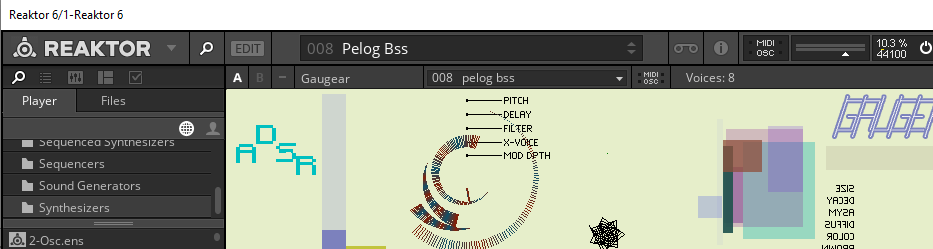
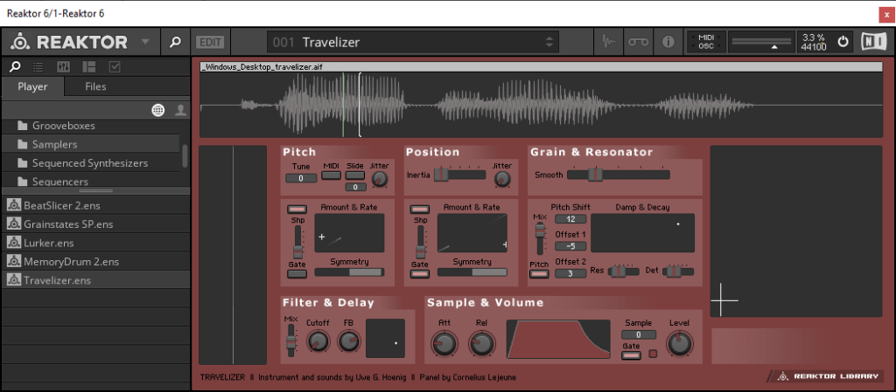
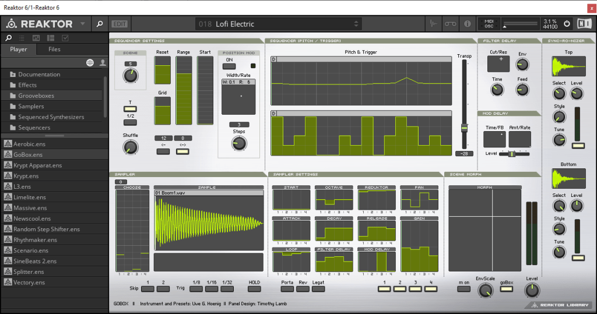
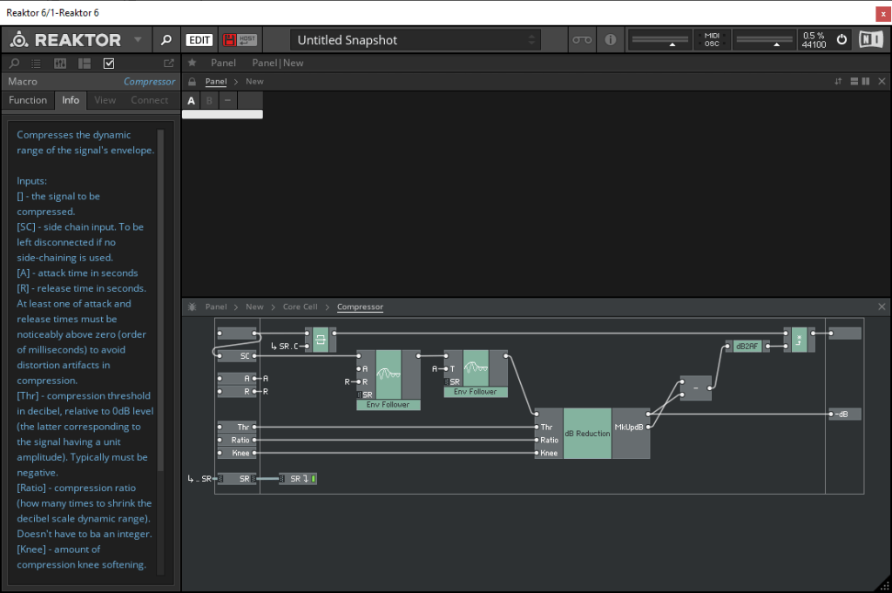

Reaktor 6
I’m getting back into Reaktor again and I realized I forgot how great the Factory Library synths are.

There are some super weird soundscape patches too that are new.

Reaktor is one of the best ways to do granular synthesis that I know of.

There are some pretty leftfield drum beatbox kind of patches too.
I also realized that Reaktor 6 includes some kind of modular patching environment too called Blocks. I will try that out soon.
I also realized that I forgot about the Reaktor DSP compiler called Core. This is the part of Reaktor that derives from Sync Modular if memory serves. Sync modular let you do some hardcore DSP stuff with z-1 (unit sample delay). Looks like Core lets you do the same.
I vaguely recall doing Core modules with Reaktor 5 but I didn’t get heavily into it. I also have the Korg Oasys PCI card that uses SynthKit, which is Korg’s version of native DSP compilation although it targets a DSP chip.
In order to use Core you need to create a toplevel Core block which is denoted by a little dotted cube and when you drill in there are three sections to the block like in the screenshot below

We will see if I end up using this much. I read the manual a little and it makes sense to me.
www.native-instruments.com/fileadmin/nimedia/downloads/manuals/REAKTOR6BuildinginCoreEnglish0618.pdf